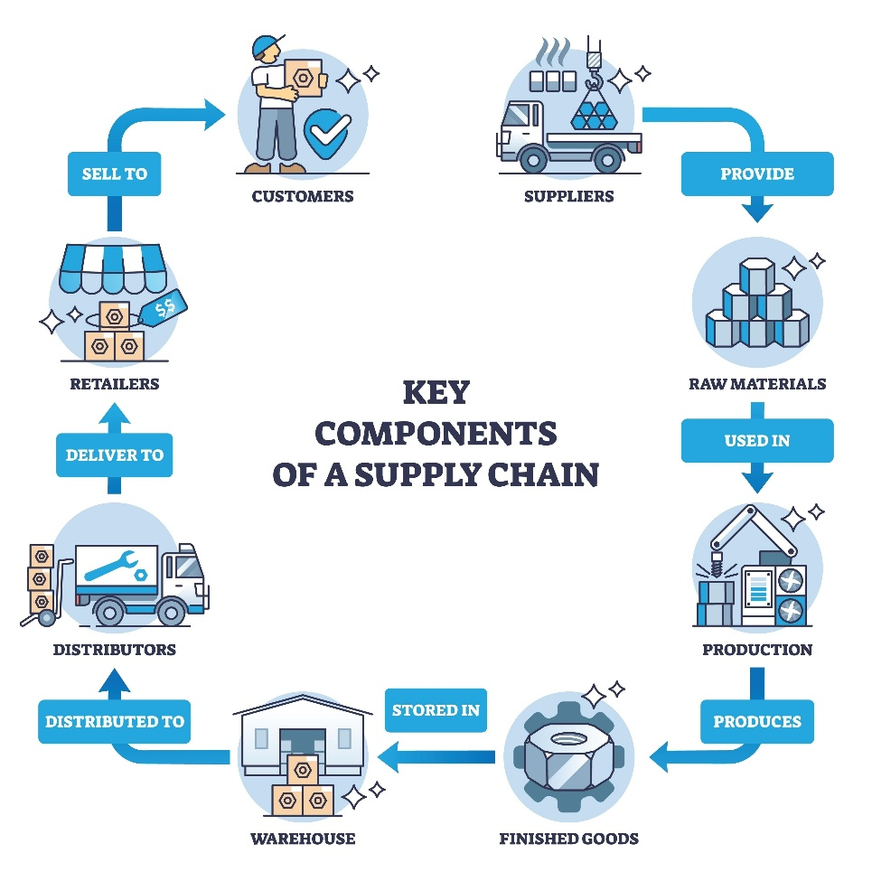

A supply chain management system helps an organization monitor and optimize its production and distribution processes in order to increase its efficiency. It connects all the processes involved in a supply chain which includes planning, sourcing, making, delivering and returning.

Embedding an SCM system into your organization helps its operations in a variety of ways.
Reduced Cost
Customer Satisfaction
Better Quality
Increased Flexibility
They are mainly designed to control two functions in a supply chain.
To monitor and control flow of goods: It helps in tracking raw materials, work-in-progress and the end product from the beginning to the end of the supply chain.
To monitor and control flow of information: It helps tracking order statuses, inventory, demand and share this information.
To accomplish these functions there are different modules involved in a SCM system which include:
Logistics and Transportation: Logistics is the backbone of most supply chain. Maintaining and optimizing this allows organizations to reduce costs, optimize processes and improve customer satisfaction.
Inventory Management: This module is important in order to keep track of your inventory and to ensure it is available wherever or whenever it is required.
Purchase order Management: This module provides a structured framework in the procurement process. It standardizes orders and its content. It helps validate order size, quantity, price, delivery dates and terms and conditions. It also helps automating the purchase process.
Warehouse Labor Management: This module helps in planning warehouse labor and activities in order to maximize productivity.
Supply Chain Planning: It helps in effectively planning different processes in the supply chain. Which can lead to saved costs, reduced time and can even help anticipate or mitigate potential risks and disruptions.
Procurement: This module helps minimize costs and helps make better buying decisions. It helps in choosing the best suppliers thereby improving supplier relations and reducing risks due to disruption in supplies. It can manage a number of suppliers and even make contingencies if there is a disruption in one of them.
Supply Chain Analytics: Analytics is an important part of any organization in our time. It helps provide actual real time data and insights which are crucial in any organization.
Integration: This module can help integrate different kinds platform with the SCM systems. It ensures seamless dataflow between different platforms with different solutions.
Warehouse Management: This module helps manage and record serial numbers of products, expiration dates and access real time inventory to prevent stock outs and overstocks
Supplier Management: It helps organize different supplier details and relationship management between them.
The main role of AI in SCM systems include
Predictive Analytics: AI models can be used to analyze large data sets to forecast future demands with great accuracy
Automation: AI can help automate a lot of tasks which earlier used to take a lot of labor. Robots are used to automate processes in warehouse which used to require forklift operators and manual sorting can now be done with use of Robots and AI.
Optimization: AI can be used to optimize a lot of processes, a variety of algorithms can be tailored to specific processes in order to improve its efficiency
Analytics: AI can be used to analyze different data sets in order to provide insights very quickly. It can identify risk and errors in real time.
Supply Chain Management systems play a pivotal role in any organization. It helps in increasing the efficiency of many processes. It helps integrate all the different processes involved in a supply chain into one system. It helps reduce costs, improve customer satisfaction, Quality and Flexibility of different processes.
Different modules involved in an SCM system helps cover almost all processes in a supply chain. It essentially controls the flow of goods and information throughout the entire supply chain. With the Integration of AI, information from this system can be analyzed and optimized efficiently in order to forecast demands, automate tasks and get real time insights about the data obtained from the system. Introducing an SCM system into an organization has a lot of benefits which helps them boost their overall efficiency and productivity.